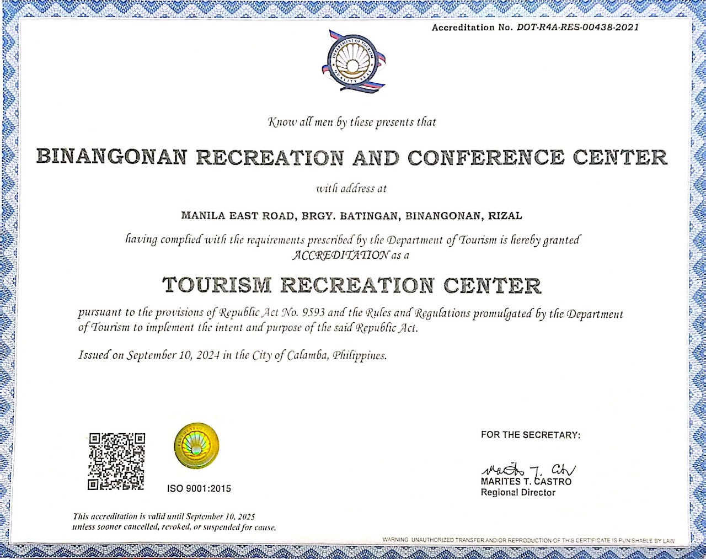

AWARD
BRCC
BINANGONAN RECREATION AND
CONFERENCE CENTER
BRCC has received the DOT accreditation, which is an acknowledgment awarded by the Philippine Department of Tourism—to-tourism businesses that meet the basic standards for the operation and upkeep of tourism facilities and services.